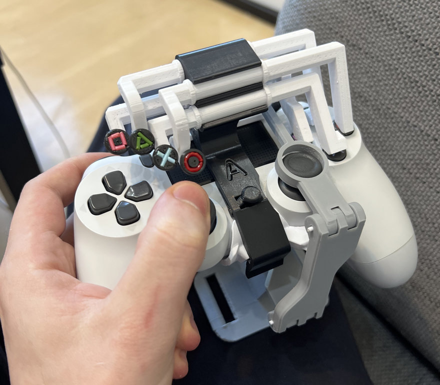

Disabled Controllers
Accessible, fully customisable controllersA lot of the time, disabled people are left without a way to interact with modern computers, and this applies especially to gaming, where low reaction times are a must.
We're here to fix that.
Above is a real solution that a disabled person has had to develop themselves. You can see theres a lot of workaround. There's a real stigma against those who can't play games properly, and businesses very often do not provide any useful alternatives to the traditional methods of control. This is ridiculous, as people will often have to go through many, many hoops just to do the same things that able bodied people can.
Our solution is an easily programmable, simple device, which is open to all. This can improve mental health, education on disabled people and their struggles, and overall help a community take a step forward.